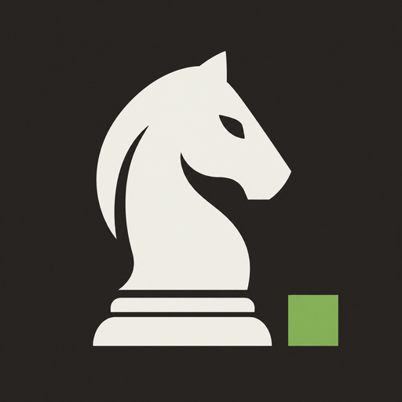

ChessbotMake the board feel right. Preferences are saved on this device.
Choose the light and dark squares.
Follow the system or choose a light or dark interface.
Keep transitions still. The system preference also applies.
Show the files and ranks around the board.
Show Stockfish’s suggested move on the board.
Mute all chess sound effects.
Use 1–16 logical CPU threads, depending on this system.
Memory for cached positions, from 16 to 1,024 MiB.
Compare up to five candidate moves. More lines can take longer.